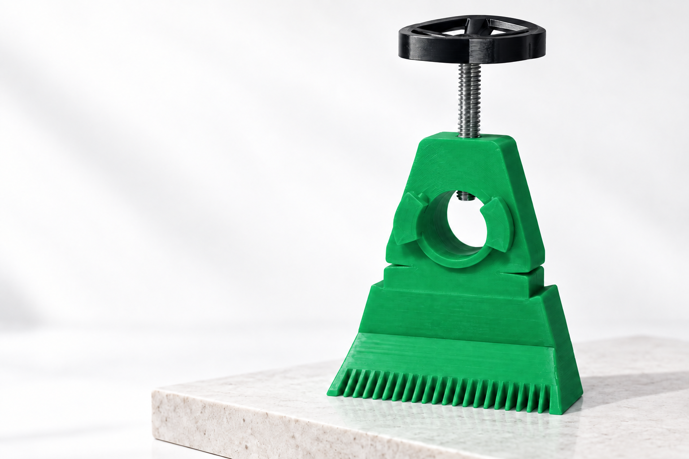
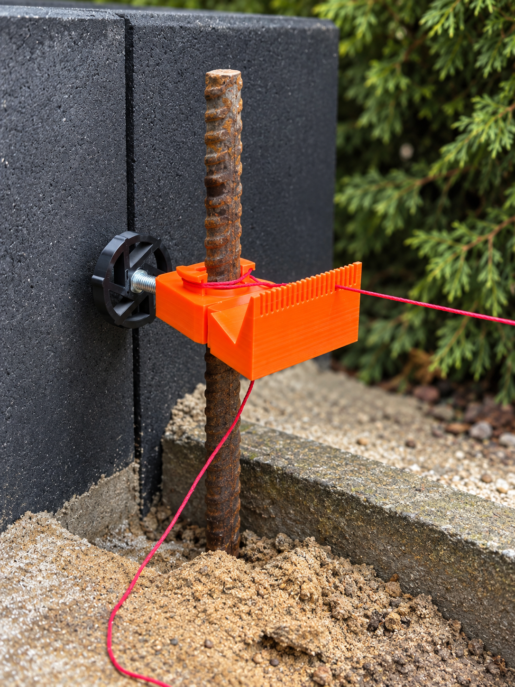

SI 3D PROJECT / The product
Masonry line holder.
A practical tool for paving and brickwork. Explore the finish, discover the details, and order through Allegro or Allegro Lokalnie.

Masonry line holder
Choose your
finish.
The same considered design.
A finish that feels like you.

Small details. A clear purpose.
Keep every
line in place.
Clamp it onto a rod. Position your guide line. A practical tool, designed with the job in mind.
- Material
- ABS
- Rod diameter
- Up to 24 mm
- Line adjustment
- 0–75 mm
- Dimensions
- 91 × 79 × 40 mm
- Clamping hardware
- Steel M8 screw & nut
Included: one holder and an M8 screw with adjustment knob.
Order on AllegroOrange edition. See the listing for current price and availability.
A simple setup
Ready for the next line.
From the rod to your reference line.
Three considered details.
Clamp.
Position the holder on a rod up to 24 mm in diameter. Tighten the adjustment knob to secure it.
Position.
Set the masonry line in the toothed guide. Adjust its position across the 0–75 mm range.
Align.
Use the line as your reference for paving or brickwork. Reposition the holder as the job progresses.
Before you order
The useful details.
What comes with the holder?
One ABS holder and an M8 screw with adjustment knob. The installed photos show the holder in use with a rod and masonry line.
Where do I choose quantity and delivery?
Complete your order on the marketplace for your selected color: Allegro or Allegro Lokalnie. The listing shows the current price, availability and delivery options.
Can I ask about a different color or project?
Of course. Email studio@example.com and tell us what you have in mind.
SI 3D PROJECT / Contact
A question about the product?
We’re an email away.
studio@example.com